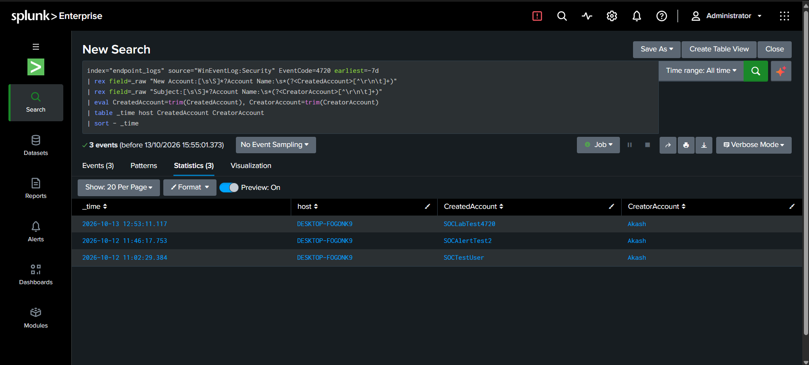
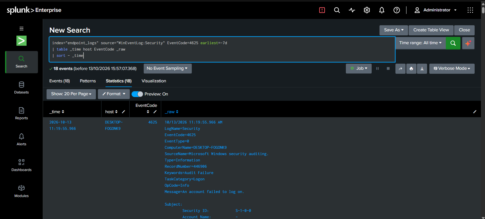
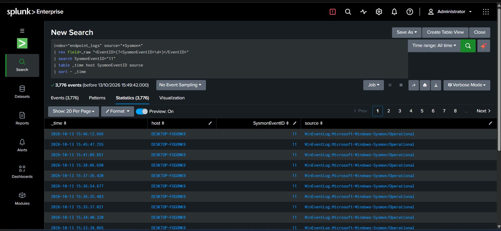
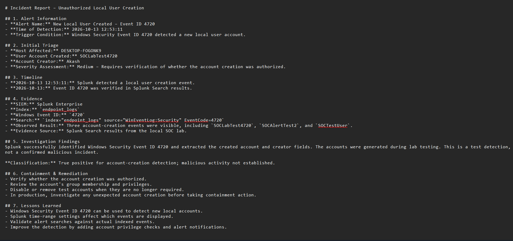

An isolated, defensive cybersecurity home lab built to simulate an enterprise Security Operations Center (SOC). Demonstrates end-to-end Windows and Sysmon telemetry engineering, custom threat detection queries in Splunk Enterprise, a 17-panel futuristic Cyber Command Center dashboard with World Map HUD, and structured NIST SP 800-61r2 incident investigations.
24h Sysmon Events Ingested
Process Creations (Event ID 1)
Network Sessions (Event ID 3)
Tactical & Analytical Panels
Telemetry originates on the Windows endpoint, captured continuously by Microsoft Sysinternals Sysmon and the Windows Security Event Log.
The Splunk Universal Forwarder running as a LocalSystem service streams events over encrypted TCP port 9997
into Splunk Enterprise, where logs are indexed into the dedicated endpoint_logs repository for detection and correlation.
Deployed Microsoft Sysmon with the community-vetted SwiftOnSecurity configuration schema. Captures process creation hierarchies, hashes (SHA256), command-line arguments, network socket initiations, and file integrity artifacts.
Configured inputs.conf with renderXml = true to preserve structured metadata fields and directed outbound traffic over TCP:9997 with automatic connection pooling and resilient backoff handling.
Splunk Enterprise receiver listens on TCP:9997. Configured index-time field extractions with automatic fallback for XML-wrapped and standard Windows security logs under the isolated endpoint_logs index.
The operational SOC dashboard is defined in splunk/dashboards/soc_dashboard.xml.
It features a futuristic command center aesthetic with dark charcoal backgrounds, neon green telemetry accents, cyan highlights,
and red threat indicators across 9 operational rows and 17 panels.

Formatted Splunk search results isolating account creation events created by administrator Akash over a 7-day lookback window.

Raw authentication audit records displaying source IP resolution, target accounts, and logon failure substatus codes.

Validates 3,776 indexed Sysmon Event ID 11 events in endpoint_logs capturing file dropping and AppLocker validation artifacts.

Formal technical documentation detailing detection timeline, root cause analysis, containment actions, and remediation.
Custom detection queries were developed, hardened against XML/text log variations, and optimized with time-binning and regex credential masking.
Extracts target username and source IP from Windows Security Event ID 4625 events, bins timestamps into 10-minute windows, and flags clusters with ≥ 3 failures.
index="endpoint_logs" source="*Security*" ("4625" OR EventCode=4625)
| rex field=_raw "<EventID[^>]*>(?<EventCode>\d+)</EventID>"
| rex field=_raw "(?ms)<Data Name='TargetUserName'>(?<TargetUserName>[^<]+)</Data>"
| rex field=_raw "(?ms)<Data Name='IpAddress'>(?<IpAddress>[^<]+)</Data>"
| search EventCode="4625"
| eval TargetUserName=coalesce(TargetUserName, "Unknown"), IpAddress=coalesce(IpAddress, "-")
| bin _time span=10m
| stats count, earliest(_time) as first_seen, latest(_time) as last_seen by TargetUserName, IpAddress, host
| where count >= 3
| eval first_seen=strftime(first_seen, "%Y-%m-%d %H:%M:%S"), last_seen=strftime(last_seen, "%Y-%m-%d %H:%M:%S")
| sort - count
Alert Logic & Noise Reduction: Grouping by 10-minute bins prevents individual user typing mistakes from triggering false alerts while accurately catching automated credential-stuffing loops. Service accounts with known intermittent sync errors are filtered using exclusion lookups.
Audits unauthorized persistence via local account creation. Uses dual XML and message body regex parsing to extract target user and responsible administrator.
index="endpoint_logs" source="*Security*" ("4720" OR EventCode=4720)
| rex field=_raw "<EventID[^>]*>(?<EventCode>\d+)</EventID>"
| rex field=_raw "(?ms)<Data Name='TargetUserName'>(?<TargetUserName>[^<]+)</Data>"
| rex field=_raw "(?ms)<Data Name='SubjectUserName'>(?<SubjectUserName>[^<]+)</Data>"
| search EventCode="4720"
| eval TargetUserName=coalesce(TargetUserName, user, "-"), SubjectUserName=coalesce(SubjectUserName, src_user, "-")
| table _time, host, TargetUserName, SubjectUserName, EventCode
| sort - _time
Alert Logic & Noise Reduction: Immediate alert generation on any local user account provisioning. Correlated with approved change tickets; accounts created without a corresponding IT change window trigger immediate severity-high security response.
Monitors encoded flags (-enc), bypass switches, and script drops while sanitizing passwords and tokens to protect data privacy.
index="endpoint_logs" (source="*Microsoft-Windows-Sysmon/Operational*" OR source="*Sysmon*") (EventCode=1 OR EventCode=11)
| rex field=_raw "(?ms)<Data Name='Image'>(?<Image>[^<]+)</Data>"
| rex field=_raw "(?ms)<Data Name='CommandLine'>(?<CommandLine>[^<]+)</Data>"
| rex field=_raw "(?ms)<Data Name='TargetFilename'>(?<TargetFilename>[^<]+)</Data>"
| eval Image=coalesce(Image, process_path, "-"), CommandLine=coalesce(CommandLine, process_exec, "-"), TargetFilename=coalesce(TargetFilename, file_name, "-")
| search Image="*powershell.exe*" OR TargetFilename="*.ps1" OR TargetFilename="*__PSScriptPolicyTest*"
| rex mode=sed field=CommandLine "s/(Password|token|secret|key|pwd)\s*[:=]\s*[^\s]+/ \1=[REDACTED]/gi"
| table _time, host, EventCode, Image, CommandLine, TargetFilename
Alert Logic & Noise Reduction: Filters benign OS noise (such as PowerShell AppLocker policy tests __PSScriptPolicyTest_*.ps1) while actively surfacing base64 flags, hidden windows, and script execution bypasses. In-stream sed regex masks sensitive credentials from indexation and display.
Monitors file system modifications for scripts dropped into temporary directories (e.g. \AppData\Local\Temp) or suspicious staging paths.
index="endpoint_logs" source="*Sysmon*" EventCode=11 TargetFilename="*.ps1"
| rex field=_raw "(?ms)<Data Name='Image'>(?<ProcessImage>[^<]+)</Data>"
| rex field=_raw "(?ms)<Data Name='TargetFilename'>(?<CreatedFile>[^<]+)</Data>"
| search NOT CreatedFile="*__PSScriptPolicyTest*"
| table _time, host, ProcessImage, CreatedFile
| sort - _time
Alert Logic: Captures dropper activity before execution begins. Correlates with process creation (Event ID 1) to determine the parent process responsible for staging malicious code.
Simulated attacks were executed following safe test plans and investigated using structured incident reports adhering to the NIST SP 800-61r2 computer security incident handling lifecycle.
Vector: Brute-force and credential-stuffing simulation targeting local user accounts (guest, Akash).
Triage & Analysis: Correlated 4625 events over 10-minute bins. Identified authentication failure status 0xC000006A (incorrect password) originating from internal test sockets and loopback interfaces. Validated that no subsequent Event ID 4624 success occurred during the attack window.
Containment & Hardening: Configured Windows Account Lockout threshold (5 invalid attempts), recommended MFA enforcement, and implemented automated threshold alerting.
Lessons Learned: Threshold alerts must combine both account name and caller IP to detect horizontal password spraying alongside vertical brute-force attempts.
Vector: Unauthorized local user account addition (SOCLabRealtime01, SOCLabTest4720) executed via administrative Command Prompt.
Triage & Analysis: Investigated Security Event ID 4720. Extracted responsible subject user (Akash) and target account. Verified correlated Event ID 4738 (user account modification) and confirmed absence of approved change ticket.
Containment & Remediation: Account disabled and removed via net user <account> /delete. Audited Active Directory and local administrator group memberships.
Lessons Learned: Local account creation should be restricted via group policies (GPO) and monitored via real-time high-severity alerts dispatched to on-call SOC analysts.
Vector: Harmless base64-encoded command execution (powershell -enc ZQBjAGgAbwAgACIAVABlAHMAdAAiAA==) simulating obfuscated dropper activity.
Triage & Analysis: Correlated Sysmon Event ID 1 (Process Create) with Event ID 11 (File Create). Decoded payload to confirm harmless echo "Test" test command. Filtered out transient AppLocker policy check files (__PSScriptPolicyTest_*.ps1) to ensure high-fidelity alerting.
Containment & Recommendations: Enforce PowerShell Constrained Language Mode, enable PowerShell Script Block Logging (Event ID 4104), and restrict execution policies.
Lessons Learned: Encoded command execution in user space should be treated as suspicious by default; automated de-obfuscation pipelines accelerate analyst triage time.
Zero-Trust Architecture // Enclave Isolation // Threat Prevention
In defensive enterprise cybersecurity, security consoles such as Splunk Enterprise Web (port 8000) and management APIs (port 8089) must never be exposed directly to the public internet. Exposing raw SIEM ports introduces severe risk: WAN-wide brute force attacks, potential zero-day exploitation, and reconnaissance against internal security infrastructure.
To maintain host security and uphold zero-trust principles on this workstation, this public portfolio does not expose live SIEM ports or tunnel raw network traffic. Instead, 100% of the operational value—including complete telemetry data pipelines, production SPL detection logic, high-resolution 17-panel Cyber Command Center captures, and NIST incident case studies—is openly documented and verified in this published showcase.
When running directly on this Windows analyst workstation, click below to open your local Splunk Enterprise Web dashboard.
Open Live Splunk Dashboard (http://localhost:8000)
Host Service: Active Target: http://localhost:8000 • Native Splunk Enterprise Web Authentication
Get-Service Splunkd. The status should report Running.Start-Service Splunkd (or command prompt net start Splunkd).Get-NetTCPConnection -LocalPort 8000 -State Listen to ensure splunkd.exe is accepting loopback traffic.http://localhost:8000 or http://127.0.0.1:8000.
Verified & Operational: Sysmon and Windows Security log collection, Splunk Universal Forwarder transmission over TCP:9997,
dedicated indexation in endpoint_logs, custom SPL search logic, in-stream credential masking, and 17-panel Cyber Command Center dashboard visualization.
Pending Real-Time Evaluation: Automated scheduled alert dispatch evaluations (cron */15 * * * *) and SMTP delivery remain pending live simulated attack confirmation.